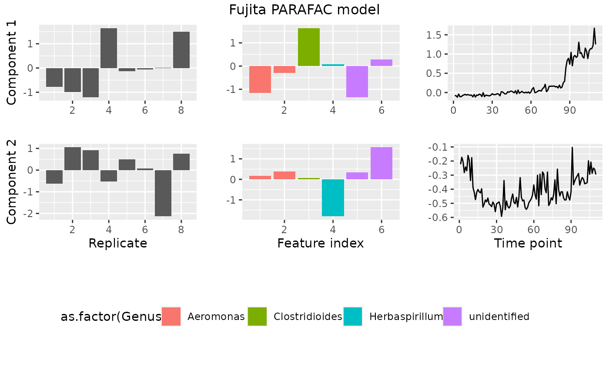

Plot a PARAFAC model
Usage
plotPARAFACmodel(
model,
dataset,
numComponents,
colourCols = NULL,
legendTitles = NULL,
xLabels = NULL,
legendColNums = NULL,
arrangeModes = NULL,
continuousModes = NULL,
overallTitle = ""
)Arguments
- model
Model output from
parafac().- dataset
A longitudinal microbiome dataset, ideally processed with
processDataCube(), formatted as follows:- data
Array object of the data cube
- mode1
Dataframe with all the subject metadata, ordered the same as the rows in the data cube.
- mode2
Taxonomic classification of the microbiota, ordered the same as the columns in the data cube.
- mode3
Dataframe with the time metadata, ordered the same as the third dimension in the array.
- numComponents
Number of PARAFAC components in the model.
- colourCols
Vector of strings stating which column names should be factorized for colours per mode.
- legendTitles
Vector of strings stating the legend title per mode.
- xLabels
Vector of strings stating the x-axis labels per mode.
- legendColNums
Vector of integers stating the desired number of columns for the legends per mode.
- arrangeModes
Vector of boolean values per mode, stating if the loadings should be arranged according to colourCols (TRUE) or not (FALSE).
- continuousModes
Vector of boolean values per mode, stating if the loadings should be plotted as a line plot (TRUE) or a bar plot (FALSE).
- overallTitle
Overall title of the plot.
Examples
library(multiway)
#> Loading required package: CMLS
#> Loading required package: quadprog
#> Loading required package: parallel
#>
#> Attaching package: ‘multiway’
#> The following objects are masked from ‘package:parafac4microbiome’:
#>
#> corcondia, parafac
library(dplyr)
#>
#> Attaching package: ‘dplyr’
#> The following objects are masked from ‘package:stats’:
#>
#> filter, lag
#> The following objects are masked from ‘package:base’:
#>
#> intersect, setdiff, setequal, union
library(ggplot2)
set.seed(0)
# Make PARAFAC model
processedFujita = processDataCube(Fujita2023, sparsityThreshold=0.99, centerMode=1, scaleMode=2)
model = parafac(processedFujita$data, nfac=3, nstart=100, verbose=FALSE)
# Make plot
plotPARAFACmodel(model, processedFujita,
numComponents = 3,
colourCols = c("", "Genus", ""),
legendTitles = c("", "Genus", ""),
xLabels = c("Replicate", "Feature index", "Time point"),
legendColNums = c(0,5,0),
arrangeModes = c(FALSE, TRUE, FALSE),
continuousModes = c(FALSE,FALSE,TRUE),
overallTitle = "Fujita PARAFAC model")
